by YinLi
分子对接的基因是关键基因，比如degree前五等。一般认为结合能<0 kcal/mol的配体与受体可自发结合，结合能≤-5.0 kcal/mol说明活性成分与作用靶标之间有较好的结合活性
1 设置工作目录（一定英文）
File-Preferences-Set
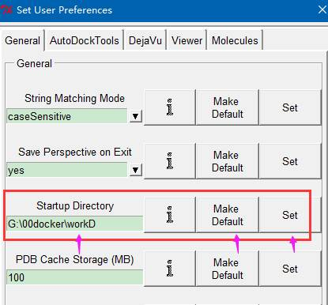
8.2.1 读入蛋白文件
File-readmolecule-选择PDB文件
8.2.2去水加氢
Edit-delete water
Edit-hydrogens-add
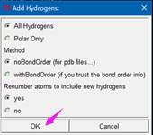
Gird-macromolecule-choose
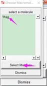
点击确定后，自动保存
第一步得到小分子pdb文件
先从pubchem得到SMILES文件，复制，
https://www.novopro.cn/tools/smiles2pdb
进行转换，下载
然后回到主界面
和上面一样read
1, 加氢Edit-hydrogens-add
2，选为配体，ligand-input-choose-
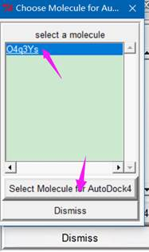
检测扭转中心和键
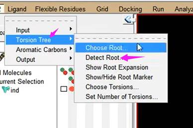
Ligand-torsion tree-
接下来
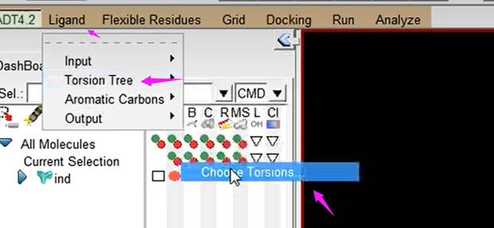
红色不可旋转的键，绿色可旋转
出现以下界面
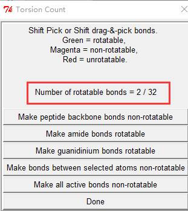
2个可以旋转的键
导出为pdbqt文件
Ligand-output-
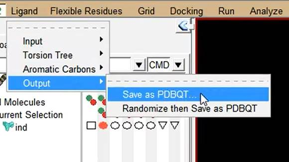
然后删除
Grid-macromolecule-open-选择刚才的蛋白文件，yes-确定
再导入小分子
Grid-set map types-openligand-
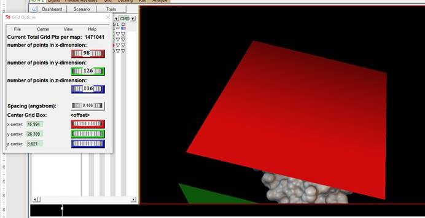
Grid-gridbox设置成正好包裹分子的长方体
拖曳小分子出来长方体
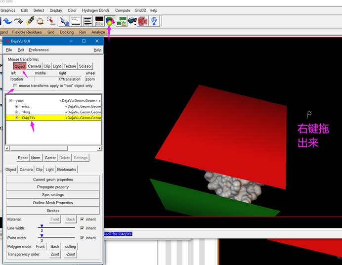
再重新把刚才的勾回去mouse那个框
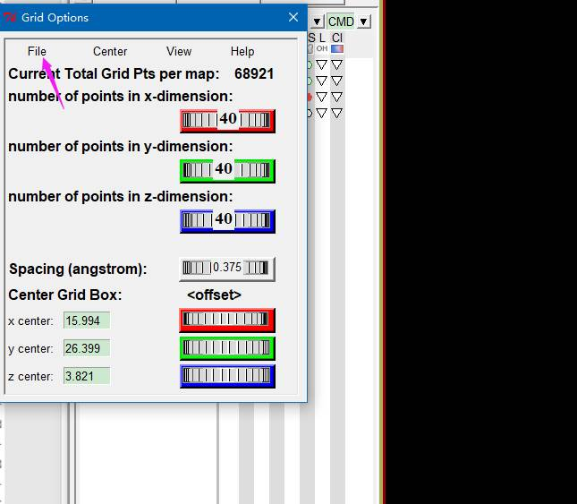
File-close savingcurrent
Docking-output-vinaconfig
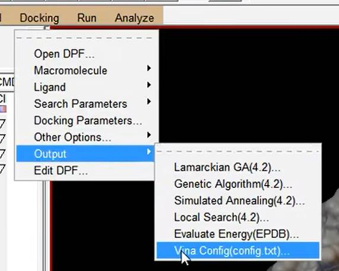
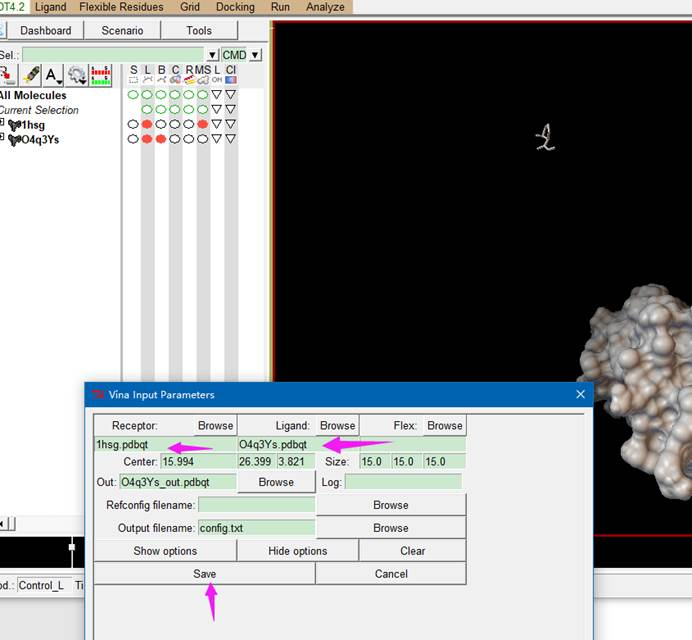
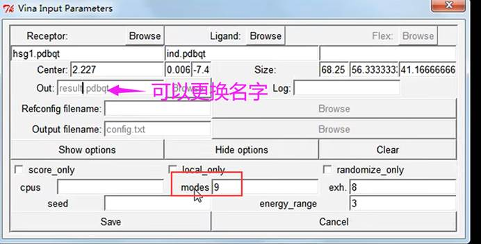
工作目录多了一个文件txt
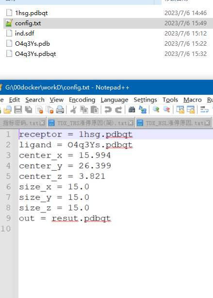
Run—run autodock vina

Launch后需要等待
出现结果
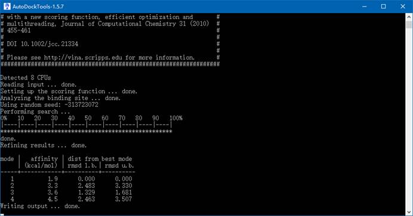
结果不好 4次 能量也高
Edit-delete-delete all molecules
Then
Analyze-docking-
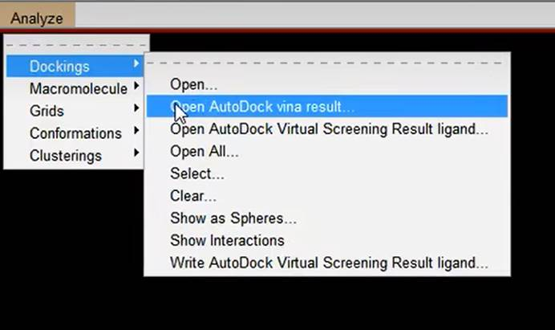 继续打开大分子的文件
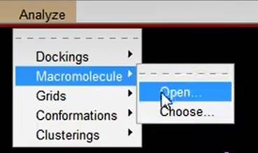
为了显示明显，换模型
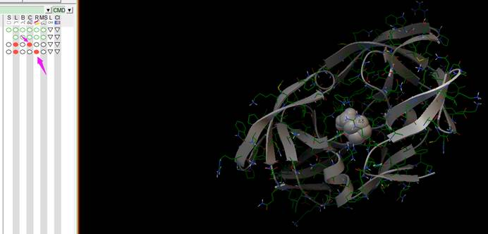
还可以继续
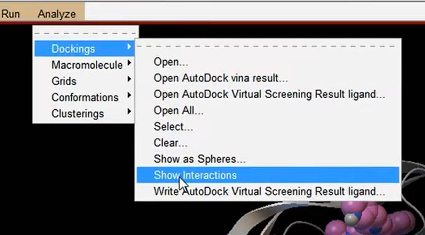
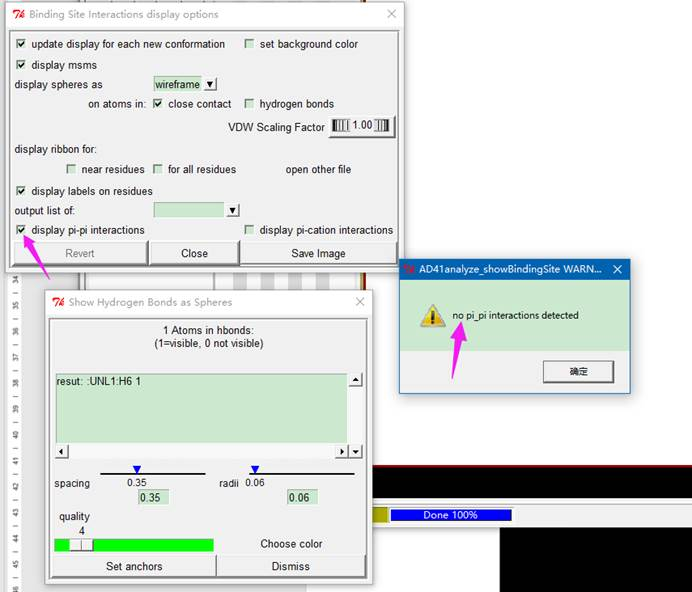
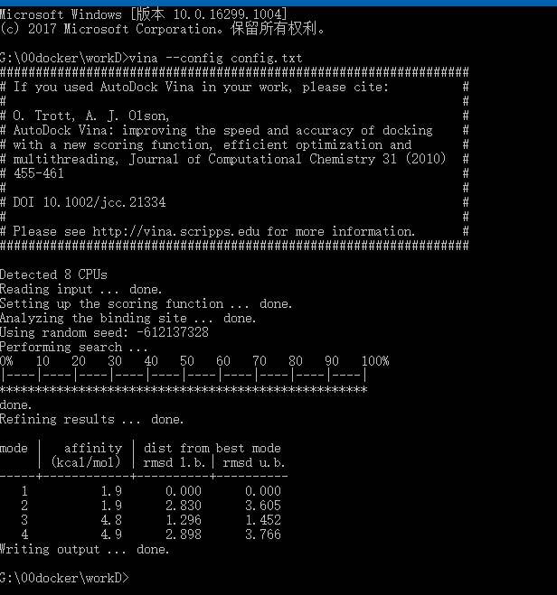
G:\00docker\workD>vina --config config.txt
前面一样第五步开始
疾病基因打底，构建大网络，各药物（复方的话），各成分（单方），所对应的靶点自成一体，一个颜色，各成分交集一种颜色，直接映射到网络。看投射的位置在哪里。
关注某药或某成分是各自作用于一个bp或kegg的不同位点，还是相关的几个位点？联合用药。意义大。
和拓展1一样，但针对细菌的话，代表性应该更好。
同上面。
Toppgene（https://toppgene.cchmc.org/）
上面这个网站可以通过查找能和多个蛋白作用的化合物。
所以可以找到和某个疾病或确定的和cancer有关的蛋白，共同输入Toppgene，然后查找相应的化合物。
如果要做对接，那要知道受体蛋白的三维结构，生物化学学过，三级结构包括所有原子的空间排列，碳链，侧链等。
现在三维结构获得主要还是X-ray。PDB数据库（http://www.rcsb.org/）大都这种方法，另外还有核磁共振等。
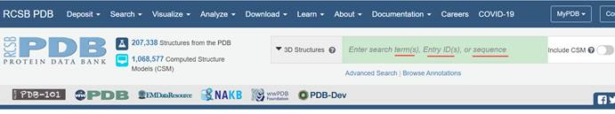
做网络药理学，基本都是PPI等得到受体蛋白，所以我们通过蛋白名称来搜索，后续再讲其他方式。比如EGFR
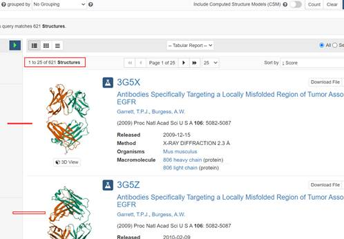
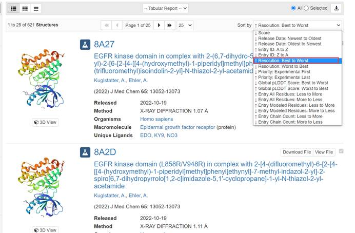
出现很多结果，有些结构非常相似，该选择哪一个？先确定物种，左边勾选。我们选择分辨率较好的在前。这里的0.9Å，Å是光波长度和分子直径的常用计量单位，值越小，分辨率越高，结构越准确。页面往下拉，可以看见这个值越来越大，我们优先选择值小的。我们可以从页面里面看见一下基本信息，比如方法，物种以及被解析的时间等。这里5GJI这个结构获取的方法就是X-RAY。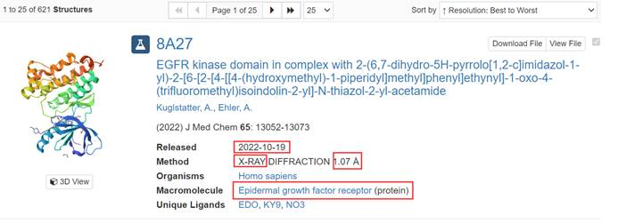
为了进一步确定，我们去unipro数据库http://www.uniprot.org/
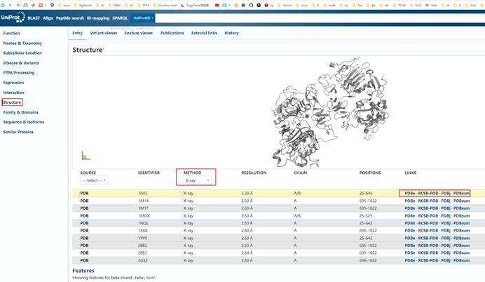
下载的PDB文件可以用pymol或者VMD观察结构
同样强大的免费蛋白质三维结构可视化软件，VMD（http://www.ks.uiuc.edu/Research/vmd）
如果要对接的蛋白没有结构，我们又要对接，那就只能是自己通过软件预测了。蛋白质结构预测的方法有从头计算法，同源建模法，穿线法和综合法。常用的是同源建模法，SWISS-MODEL（www.swissmodel.expasy.org）就是一款用同源建模法预测蛋白质三级结构的全自动软件，这里不详细介绍了，预测的模型还要涉及模型好坏的评价，后续有时间，再介绍蛋白质三级结构的预测
AutoDock不识别SDF，只识别mol2或PDB格式。
2.1 TCMSP可以下载mol2格式。
pubchem下载3D conformer SDF格式，然后OpenBabel软件（下载）转换
PUBMED下载similes文件，到https://www.novopro.cn/tools/smiles2pdb直接转变。
通过上面过程，受体和小分子的pdb格式都有了。接下来要进行蛋白受体预处理。比如去水，加氢，导出PDBQT为受体文件。
3.1 pyMOL软件导入PDB文件
直接用代码fetch 8A27（后者是蛋白名字）
或者file-get PDB,不出现就点击右下角S。
然后file-export molecule
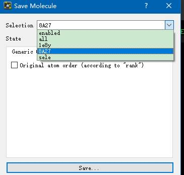
上传pdb文件send
https://swift.cmbi.umcn.nl/servers/html/model.html
继续保存为新pdb文件
3.2 ADT打开刚才的pbd文件
File-read molecule，
Delete water,hydrogens-add,ok
保存为pdb文件
Grid-macromolecule-choose-select molecule,保存
处理完了，就delete，方便处理其他小分子
4.1 读入小分子文件
File-read molecule-mol2或pdb文件
在选择一个分子作为配体或受体之前，必须把所有的氢都加到这个分子上。所以这里我们打开小分子文件后，加氢这一步弹出的窗口默认就行
Edit-hydorgens-add
4.2选为配体
Ligand-input-choose-选择-确定
接下来检测扭转键和中心，输出PDBQT格式的配体文件，
Ligand-torsion tree-detect root done
Ligand-output-save as PDBQT
4 AUTODOCK对接操作与对接结果解读
Grid-macromolecule-open-蛋白的pdbqt文件-打开-yes
导入小分子
Grid-set map types-小分子pdbqt
Grid-grid box
全包括 拖曳出小分子
File-close saving current
Grid-output-save GPF..
Grid
Run-run autogrid-browse gpf文件。接下来log filename会自动填写，一定要和前面目录一样，launch
Docking-macromolecule-set rigid filename选择pdbqt文件
Docking-ligand-choose-select ligand-accept
Docking-output-lamarckian GA
输出DPF文件
运行autodock
Run-run autodock-browse-dpf-launch生成dlg文件，这就是对接结果。
得到受体和配体的格式文件（让软件识别）
PDB+unipro下载pdb格式文件，这个文件会包括有配体或水分子等文件，所以得先去除。导入pymol软件，右击删除多余分子。导出为pymol处理过的pdb文件。
获取mol2或pdb格式，不识别sdf文件。
先读蛋白文件，读入后加氢，加氢后分子会显示有白色结构
然后grid选为受体文件
删除后再导入小分子
Read后，加氢，也会显示白色
然后ligand选为配体
因为配体分子除了双键是可以旋转的，所以接下来要检测可旋转的键。
然后导出为pdbqt文件
4 grid box
Grid-macromolecule-open-选择刚才的蛋白文件，yes-确定
再导入小分子
Grid-set map types-openligand-
设置对接box
。。。
Docking-output-vinaconfig
Run—run autodock vina
Edit-delete-delete all molecules
Then
Analyze-docking
继续打开大分子的文件
通过对接我们均可以得到配体和受体的结合能，我们挑选最低的结合能构象去进行结果分析。首先我们要清楚结合能的评判标准，对于Autodock系列的结合能评判标准为：通常情况下结合能越小，结合作用越好。结合能大于-4kcal/mol表明配体和受体结合作用较差，结合能在-4~-7kcal/mol表明配体和受体结合作用中等，结合能小于-7kcal/mol表明配体和受体之间结合能力较强。我们可以以此来分析所对接分子的效果。